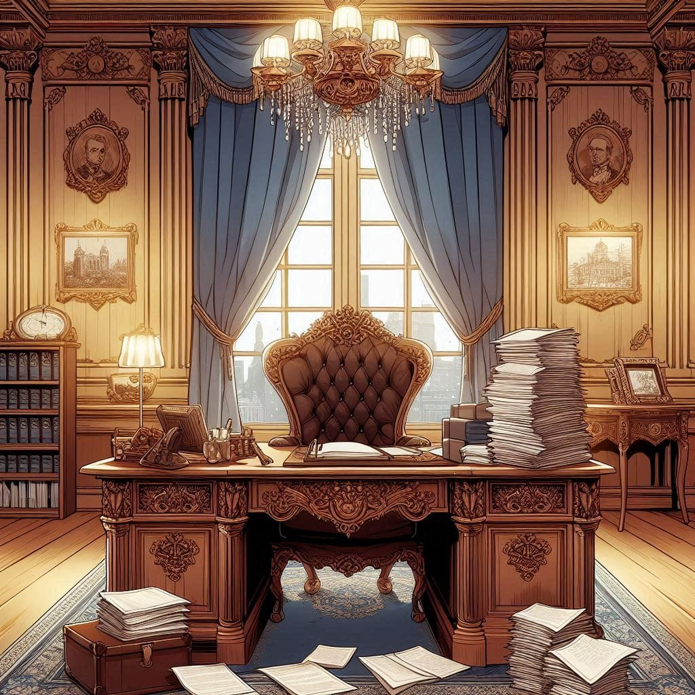

Uneasy and restless, Saintana made her way toward the barren mountain under the pretense of conducting an inspection. The mountain, abandoned long ago for its supposed uselessness, loomed like a dark shadow on the horizon. Its eerie reputation was well-earned—a scorched forest of blackened, lifeless trees, a dry riverbed that whispered of what once flowed there. By night, the place was enough to send chills down anyone’s spine, for not a single living being dared to linger in that desolate wasteland. Saintana found herself sitting beneath one of the burned trees, its charred trunk a haunting silhouette against the bleak landscape. She gazed at the tree, her usually steely silver eyes soft with affection. For once, her composed exterior seemed to falter, revealing the exhaustion beneath. This time, she wasn’t there to fulfill a duty or perform her role; she was there to escape. To rest. To feel even a moment of solitude away from the suffocating responsibilities that chained her.
Meanwhile, back at the castle, Taintai’s aides were frantic, desperately searching for her. Saintana had left a mountain of documents on her desk, unfinished and untouched. While they combed through the empire looking for her, she closed her eyes in that brazen, forsaken land. And for the first time in years, she smiled—not in reality, but in her dream.
In her dream, she was laughing and running hand-in-hand with a boy through a sunlit farm. His golden blonde hair gleamed in the soft light as he turned to her, his voice filled with warmth and joy. “My Milli! Let’s live like this forever,” he said, his words as light as the breeze that carried them. She laughed back, a sound full of life, and pulled him into a hug. The happiness of the moment enveloped her like a warm embrace. But just as suddenly as it came, the dream shattered. She awoke with a gasp, the image of his face fading from her mind like sand slipping through her fingers. Tears slid down her cheeks as she realized the cruel irony of it all—her happiest moments existed only in dreams. And there, in that abandoned wasteland, she allowed herself to cry, knowing no one would see her vulnerability.
When she returned to the castle, she was met with the exasperated scolding of Taintai’s aide. “My lady, you mustn’t leave your post without informing anyone! The paperwork is piling up!” he bickered and pleaded, but his words bounced off her like pebbles against stone. His nagging was as useless as the desolate mountain she had just visited, but still, he fulfilled his duty.
Saintana said nothing. She simply gathered the papers left on her desk and retreated to her chambers. There, she opened a hidden drawer and took out her most treasured—and most cursed—possession: her diary, titled *My 100 Lives of Emptiness*. She flipped to a blank page and began to write.
“Today, you came into my dream after so long. We were happy. Maybe the gods have a grudge against me, and that’s why they stole my first and last happiness. They snatched you from me. You promised we’d live together forever, but you broke that promise. You betrayed me!!, You were a liar, a big liar.”
Her hand trembled as she wrote the last words, and she let out a bitter, sarcastic laugh. Tossing the pen aside, she flipped through the diary’s older entries, her eyes scanning the accounts of her past lives.
Each page told a story of struggle, of loss, of pain. One entry recounted her life as a skilled medical expert who had died from accidentally consuming infected blood. Another described her as a fierce hunter of non-human creatures, only to meet her end at the hands of one of them. The diary chronicled her 100 lives, each cut short before she could grow old, before she could find lasting love or peace.
“This time too?” she muttered under her breath. “Will I die and wake up in another life to be tortured again?”
Her calm composure finally cracked as she slammed her fist into the table, shattering it in one blow. Her teeth clenched, her lips quivering as she fought back the wave of frustration and despair. For ten years, she had written in this diary, each entry a desperate attempt to make sense of the memories that haunted her—whether they came to her in dreams, as nightmares, or as sudden visions in the middle of her waking life. She could never escape them. Writing was her only way of confronting the truth she couldn’t ignore: even the gods had forsaken her.
Placing the diary back into its hidden drawer, she turned her attention to the pile of paperwork she had abandoned. It was her distraction, her escape from the chaos within. Tea, water, wine, and coffee sat on her desk, ready to sustain her through the long hours of the night.
By the time her maid entered, the first rays of sunlight were streaming through the windows. “You didn’t sleep, my lady,” the maid said softly, concern evident in her voice. Saintana glanced at the stack of completed papers and realized it was already morning. With a weary sigh, she muttered, “I’ll rest for a minute.” She leaned back in her chair, closing her eyes for just a moment, hoping for a reprieve from the battles within her.